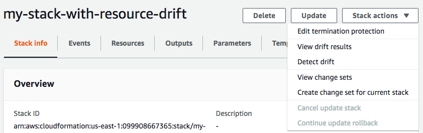

Detectar desvio em uma pilha inteira do CloudFormation
A realização de uma operação de detecção de desvio em uma pilha determina se essa pilha se desviou de sua configuração de modelo esperada e retorna informações detalhadas sobre o status de desvio de cada recurso na pilha que oferece suporte para a detecção de desvio.
Para detectar o desvio em uma pilha inteira usando o AWS Management Console
Abra o console do AWS CloudFormation em https://console.aws.amazon.com/cloudformation
. -
Na lista de pilhas, selecione a pilha em que deseja executar a detecção de desvio. No painel de detalhes da pilha, escolha Stack actions (Ações da pilha) e selecione Detect drift (Detectar desvio).
O CloudFormation exibe uma barra de informações que declara que a detecção de desvio foi iniciada para a pilha selecionada.
-
Aguarde até que o CloudFormation conclua a operação de detecção de desvios. Quando a operação de detecção de desvio for concluída, o CloudFormation atualizará o Status de desvio e o Tempo da última verificação de desvio para sua pilha. Esses campos estão listados na seção Overview (Visão geral) do painel Stack info (Informações da pilha) da página de detalhes da pilha.
A operação de detecção de desvio pode levar vários minutos, dependendo do número de recursos incluídos na pilha. Você só pode executar uma operação de detecção de desvio em uma determinada pilha ao mesmo tempo. O CloudFormation continua a operação de detecção de desvios mesmo depois de você descartar a barra de informações.
-
Revise os resultados da detecção de desvio para a pilha e seus recursos. Com a pilha selecionada, no menu Stack actions (Ações da pilha) selecione View drift results (Visualizar os resultados de desvio).
O CloudFormation lista o status geral de desvio da pilha, bem como a última vez que a detecção de desvio foi iniciada na pilha ou em qualquer um dos recursos individuais dela. Considera-se que uma pilha foi desviada se um ou mais de seus recursos foram desviados.

Na seção Status de desvio do recurso, o CloudFormation lista cada recurso de pilha, o status de desvio dele e a última vez em que a detecção de desvios foi iniciada no recurso. O ID lógico e o ID físico de cada recurso são exibidos para ajudar você a identificá-los. Além disso, para recursos com status MODIFIED, o CloudFormation exibe detalhes de desvios do recurso.
É possível classificar os recursos com base em seus status de desvio usando a coluna Drift status (Status de desvio).
-
Para visualizar os detalhes em um recurso modificado.
-
Com o recurso modificado selecionado, escolha View drift details (Visualizar detalhes de desvio).
O CloudFormation exibe a página de detalhes de desvios desse recurso. Esta página lista os valores de propriedade esperados e atuais do recurso e quaisquer diferenças entre os dois.
Para destacar uma diferença, na seção Differences (Diferenças), selecione o nome da propriedade.
-
As propriedades adicionadas são destacadas em verde na coluna Current (Atuais) da seção Details (Detalhes).
-
As propriedades excluídas são destacadas em vermelho na coluna Expected (Esperadas) da seção Details (Detalhes).
-
As propriedades cujo valor foi alterado são destacadas em amarelo nas colunas Expected (Esperadas) e Current (Atuais).
-
-

-
Para detectar o desvio em uma pilha inteira usando o AWS CLI
Para detectar desvios em uma pilha inteira usando a AWS CLI, use os seguintes comandos aws
cloudformation:
-
detect-stack-driftpara iniciar uma operação de detecção de desvio em uma pilha. -
describe-stack-drift-detection-statuspara monitorar o status da operação de detecção de desvio da pilha. -
describe-stack-resource-driftspara rever os detalhes da operação de detecção de desvio da pilha.
-
Use o
detect-stack-driftpara detectar o desvio em uma pilha inteira. Especifique o nome da pilha ou o ARN. Você também pode especificar os IDs lógicos de quaisquer recursos específicos que você deseja usar como filtros para essa operação de detecção de desvio.$aws cloudformation detect-stack-drift --stack-namemy-stack-with-resource-drift{ "StackDriftDetectionId": "624af370-311a-11e8-b6b7-500cexample" } -
Como as operações de detecção de desvio de pilha podem ser de longa execução, use
describe-stack-drift-detection-statuspara monitorar o status da operação de desvio. Esse comando usa o ID de detecção de desvio da pilha retornado pelo comandodetect-stack-drift.No exemplo abaixo, pegamos o ID de detecção de desvio da pilha retornado pelo exemplo acima de
detect-stack-drifte o transmitimos como um parâmetro paradescribe-stack-drift-detection-status. O parâmetro retorna detalhes da operação que mostram que a operação de detecção de desvio foi concluída, que um recurso de pilha única foi desviado e que a pilha inteira é considerada como tendo sido desviada como resultado.$aws cloudformation describe-stack-drift-detection-status --stack-drift-detection-id624af370-311a-11e8-b6b7-500cexample{ "StackId": "arn:aws:cloudformation:us-east-1:099908667365:stack/my-stack-with-resource-drift/489e5570-df85-11e7-a7d9-50example", "StackDriftDetectionId": "624af370-311a-11e8-b6b7-500cexample", "StackDriftStatus": "DRIFTED", "Timestamp": "2018-03-26T17:23:22.279Z", "DetectionStatus": "DETECTION_COMPLETE", "DriftedStackResourceCount": 1 } -
Quando a operação de detecção de desvio de pilha estiver concluída, use o comando
describe-stack-resource-driftspara rever os resultados, incluindo valores de propriedade reais e esperados para os recursos que se desviaram.O exemplo abaixo usa o parâmetro
stack-resource-drift-status-filterspara solicitar informações de desvio de pilha para os recursos que foram modificados ou excluídos. A solicitação retorna informações sobre o único recurso que foi modificado, incluindo detalhes sobre duas de suas propriedades cujos valores foram alterados. Nenhum recurso foi excluído.$aws cloudformation describe-stack-resource-drifts --stack-namemy-stack-with-resource-drift--stack-resource-drift-status-filters MODIFIED DELETED{ "StackResourceDrifts": [ { "StackId": "arn:aws:cloudformation:us-east-1:099908667365:stack/my-stack-with-resource-drift/489e5570-df85-11e7-a7d9-50example", "ActualProperties": "{\"ReceiveMessageWaitTimeSeconds\":0,\"DelaySeconds\":120,\"RedrivePolicy\":{\"deadLetterTargetArn\":\"arn:aws:sqs:us-east-1:099908667365:my-stack-with-resource-drift-DLQ-1BCY7HHD5QIM3\",\"maxReceiveCount\":12},\"MessageRetentionPeriod\":345600,\"MaximumMessageSize\":262144,\"VisibilityTimeout\":60,\"QueueName\":\"my-stack-with-resource-drift-Queue-494PBHCO76H4\"}", "ResourceType": "AWS::SQS::Queue", "Timestamp": "2018-03-26T17:23:34.489Z", "PhysicalResourceId": "https://sqs.us-east-1.amazonaws.com/099908667365/my-stack-with-resource-drift-Queue-494PBHCO76H4", "StackResourceDriftStatus": "MODIFIED", "ExpectedProperties": "{\"ReceiveMessageWaitTimeSeconds\":0,\"DelaySeconds\":20,\"RedrivePolicy\":{\"deadLetterTargetArn\":\"arn:aws:sqs:us-east-1:099908667365:my-stack-with-resource-drift-DLQ-1BCY7HHD5QIM3\",\"maxReceiveCount\":10},\"MessageRetentionPeriod\":345600,\"MaximumMessageSize\":262144,\"VisibilityTimeout\":60,\"QueueName\":\"my-stack-with-resource-drift-Queue-494PBHCO76H4\"}", "PropertyDifferences": [ { "PropertyPath": "/DelaySeconds", "ActualValue": "120", "ExpectedValue": "20", "DifferenceType": "NOT_EQUAL" }, { "PropertyPath": "/RedrivePolicy/maxReceiveCount", "ActualValue": "12", "ExpectedValue": "10", "DifferenceType": "NOT_EQUAL" } ], "LogicalResourceId": "Queue" } ] }